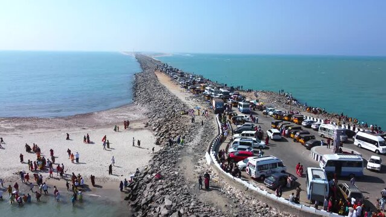

About: Dhanushkodi is a ghost town at the southeastern tip of India, known for beaches and Ramayana connection.
Best Time: October – March
Weather: Hot and humid
Route: Reach Rameswaram → Travel 20 km
✈ Airport: Madurai Airport
🚆 Railway: Rameswaram Railway Station
🚌 Bus: Rameswaram Bus Stand
If you already visited, help others and us 🙌